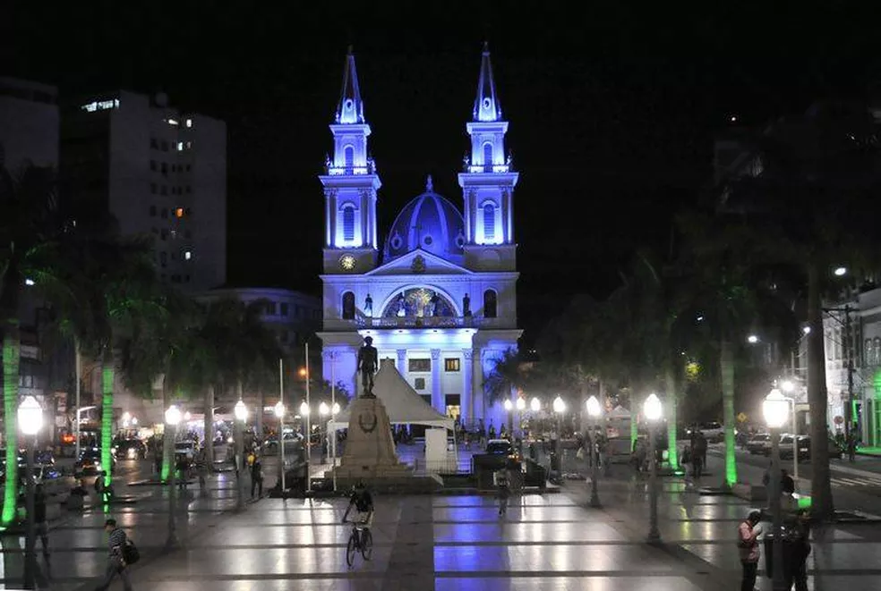
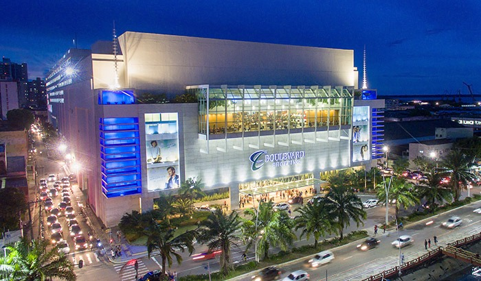
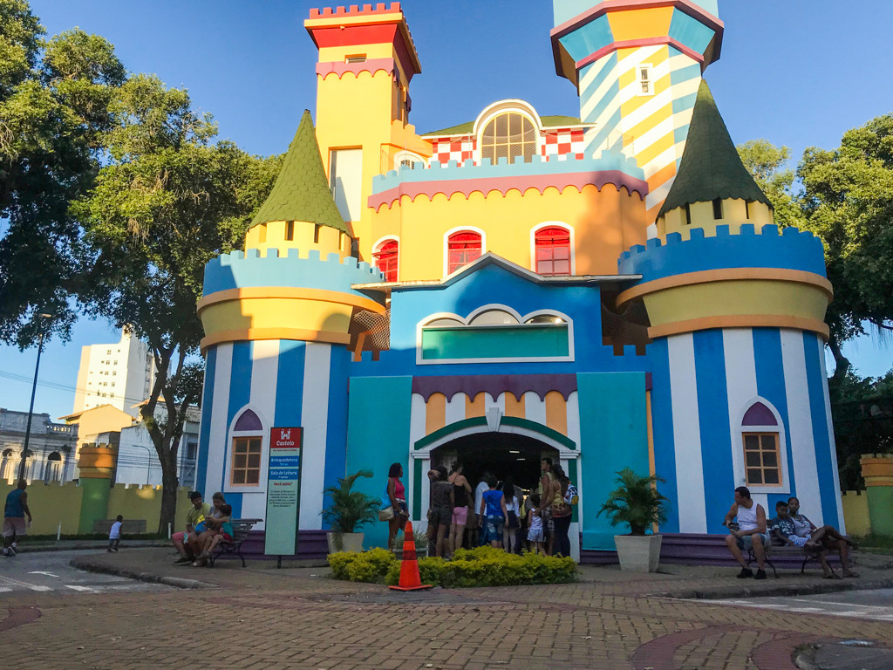

Locais para visitar

Praça São Salvador
Campos dos goytacazes
fica localisado proximo ao campos shopping
na beira rio
localização

Boulevard Shopping
Campos dos goytacazes
fica localisado proximo ao terminal de onibus
no Shopping Estrada
Teatro Trianon
Campos dos goytacazes
fica localisado proximo ao jardim São Benedito
no Centro de Campos

Cidade da Criança
Campos dos goytacazes
fica localisado na 28 de março
proximo a beira valão
contatos